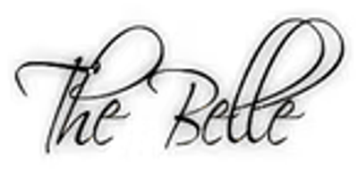
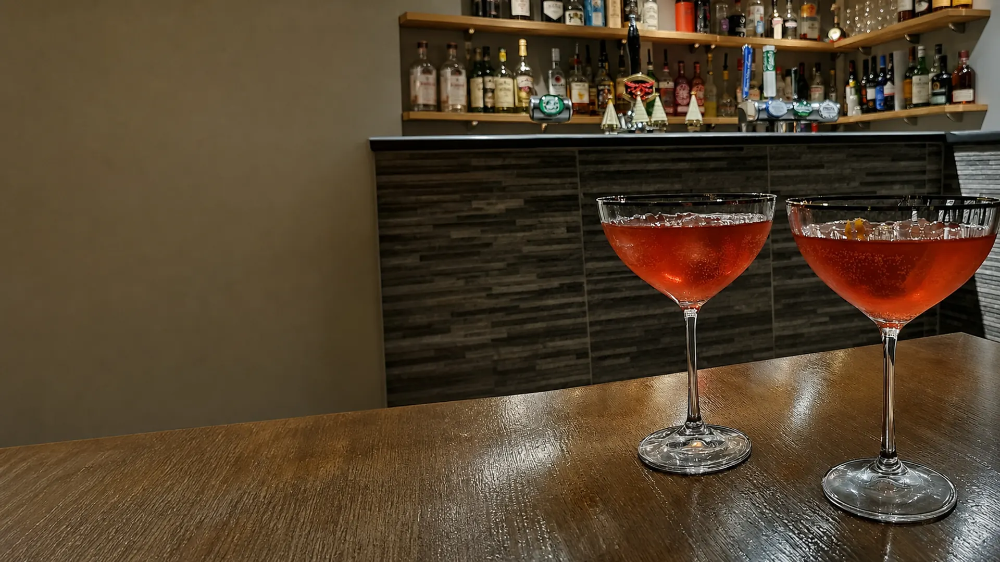
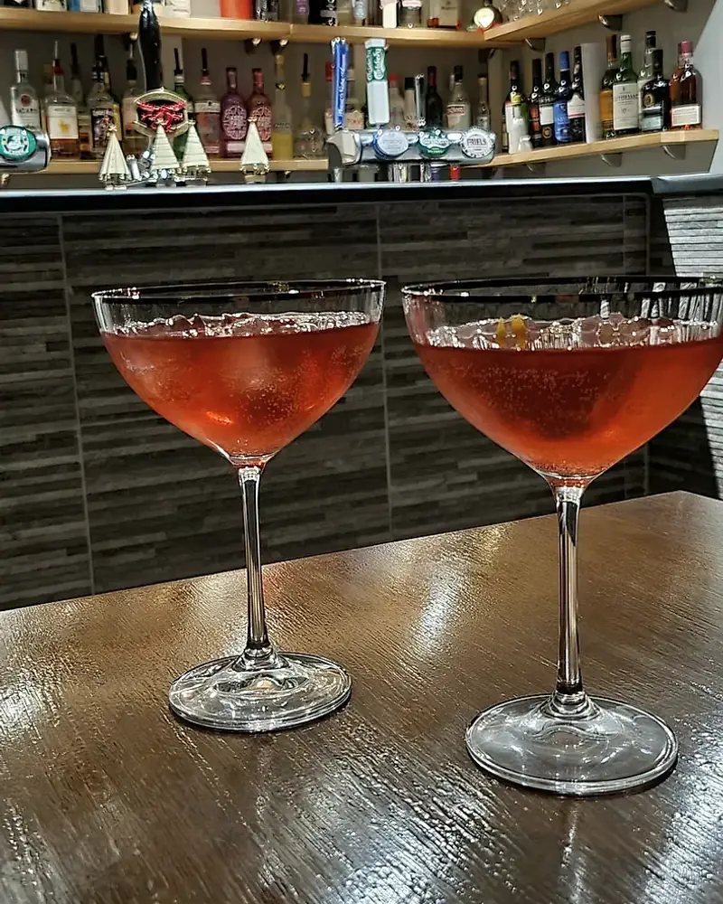
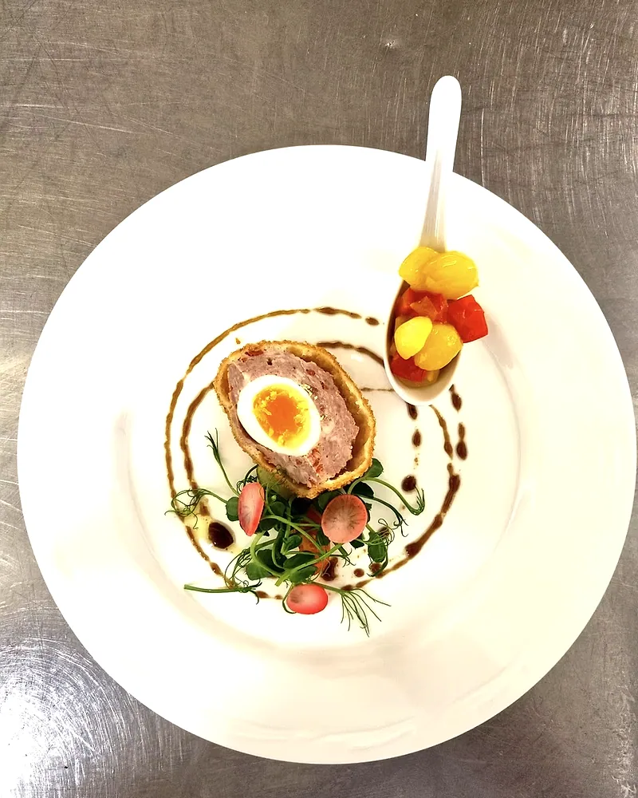
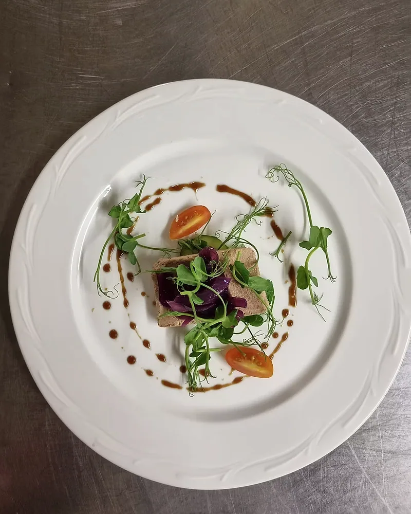
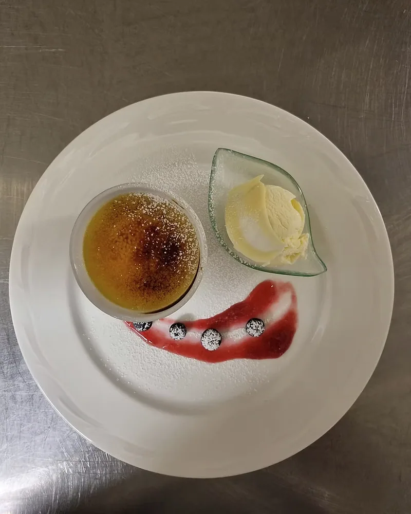
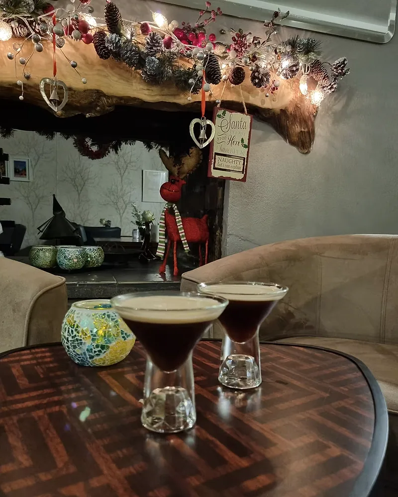

Duck salad
Pomegranate

The BelleLlanllwni · West Wales
Owner-chef dining · Llanllwni
Seasonal dishes, a changing specials board and Sunday lunch — made and served in a relaxed West Wales dining pub.
A small pub with a serious kitchen
Andrew and Susan have cooked here since 2006. Their menu follows what is fresh at market, pairing honest cooking with the easy rhythm of a country dining pub.
Meet us in Llanllwni →
Made here




Food service
Lunch, dinner and a proper Sunday midday service.
Your table
For dinner, a market-led lunch or Sunday roast, reserve through The Belle's official booking page.
Book a table